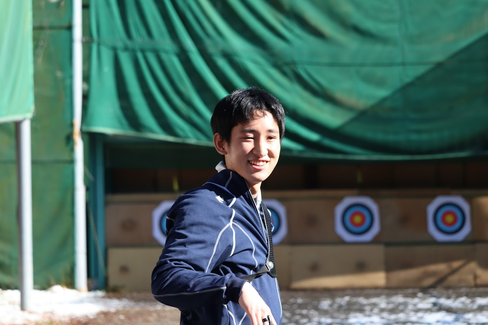

第29回目の今回は、文学部史学科の鯰大樹くんです。彼は試合などおおきな声で応援をしてくれる部活のムードメーカーです！アーチェリー部で唯一の史学科のため、新入生の史学科の方必見です！
史学科の良いところは、みんな真面目なところです。グループ課題等もうまく協力しあい、テスト前に分からないことがあれば教え合える環境です。
一年生のうちに必修や選択科目を出来うる限り履修すると、後々楽になってきます。また、テスト勉強やレポート課題は、日程から逆算して早め早めに余裕を持って行いましょう。
大学生のうちに何か打ち込めるものを行いたいと考えていました。そうして初心者歓迎とされていた部活を見て周り、最終的には弓ってカッコいい、という安直な理由から入部しました。
一年生の間はそこまで難しいことはなく、テスト期間や課題の期限が近いときは学業優先、その他のときは部活優先でメリハリをつければ、両立も可能です。
校内に射場があるところです。授業が終わってすぐに練習に行けるのは便利です。
また、男女先輩後輩の仲が良く、先輩とご飯を食べに行くと、ほぼ確実に奢ってもらえます。コロナ禍が終わった後、ぜひ先輩に集ってみてください。
射場が空いている日は自主練に行っています。空いていない日は、プロ野球を観てたりゲームをしたりしています。
史学科の授業は基礎演習や一部の語学・体育の授業を除きオンライン授業という形式で行われました。前日までに教授が講義のレジュメをインターネット上にアップするので、それを印刷して授業に臨んでいました。
対面とオンラインの授業が連続してあると、教室移動が面倒です。また、隔週で対面とオンラインを繰り返す授業があり、その日の授業はどちらで受けるか困惑しました。
ご入学おめでとうございます。アーチェリー部は初心者でも大歓迎なので、大学生になって何かやってみたいと思っている方は体験にだけでも来てください。お待ちしています。
いかがだったでしょうか。大学から打ち込むものを探している方、是非体験だけでもお越しください！アーチェリー部はいつでもお待ちしております！！次回は理学部化学科の桑原葵さんです。